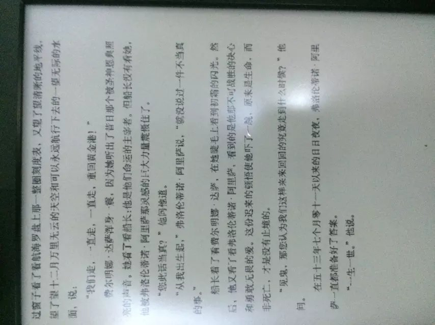

马尔克斯用一艘假装霍乱而在运河上来回航行的船安放了一份从青春年少到直面死神的爱情。而这，何尝又不是一个巨大的隐喻，船，河流，旅行，爱情，衰老，疾病，死亡…爱情的发生是如此的仓促，而往往与外表联系在一起，正如弗洛伦蒂诺·阿里萨第一眼看见费尔明娜·达萨，为其无与伦比的美丽和高贵的气质所吸引，而乌尔比诺医生似乎更只是迷恋少女美丽的身体而决定追求。从这来看，爱情更多的源自于性。
而爱情的发展和转折更是耐人寻味。费尔明娜与阿里萨年少时的爱情是燃烧的火焰，家长的管制，身份地位的差距，空间上的距离都不能阻止它，反而让它的火焰更加旺盛，烧得两人都不能自已，旺得观众都按捺不住心中的有情人终成眷属情结，纷纷化作青鸟，殷勤为探看。可当费尔明娜终于从旅途归来见到为她憔悴的情郎，爱情的大厦却在一瞬间崩塌——原来，她所以为的爱情，只是一场用信件和电报编织起来的幻梦。
梦乍然破碎的时候，睡得深的那个人总是要承受更多的痛苦。
往后的故事变得世俗而乏味，费尔明娜成功嫁给身世显赫英俊多才的医生，婚姻持续到医生生命的尽头，没有真正的相爱，但在共同的生活中彼此已经融为一体，享尽了世俗的荣华富贵，足够幸福和美满。阿尔萨不择手段往上爬，风流成性，却一直以对她的爱作为生活的信念。
阿里萨为他的爱情等待了大半生，终于在生命的尽头得偿所愿。这样的黄昏之恋自然是读得人荡气回肠，但回过头来一想，且不说这年代还有几人会为一份一直没有回应的感情坚守半生，光是一种”为爱而生”却风流成性的态度，就很值得推敲。
世间有几人能拥有钱钟书般的伉俪情深，那是太高的奖赏。又有几人能在年少时遇见天造地设的另一半。而越是令人艳羡的爱情，似乎也就越容易破裂。命运善妒，总不吝给人以水深火热的熬煮。美好如芸娘和沈复，也以早亡告终。更无奈的，是故人心易变。悼亡凄婉如纳兰和苏子，也另寻了新欢。
——似乎，专一，本来就不是人类这种生物的属性。
是天雷碰地火地遇见一份完美的爱情，还是在磨合与交往中把一份爱情培养得完美。这，似乎又是一个永恒的议题。而大部分的平庸你我，不过是在对或错的时间遇见一个差一点就对了的人，然后又阴差阳错，然后，又抱憾终身。
爱情与归宿的问题总让我想起一句话:
“你愿与人做平庸的神仙眷侣，还是一生跨越千山万水，孑然飘零？”
午夜的火车就像一幅世间百态，有人玩着手机百无聊赖，有人躲在角落一根又一根地抽烟，有夫妇在火车的地板上相拥而眠。芸芸众生，似是天差万别，又好像并无新事。
我喜欢把生命比作只有唯一终点的旅行。每个人都知道会有终点，但每个人的终点都不一样。每个人都有可能相遇，相遇过后却不知道对方或你自己会在哪一站提前下车。列车未开动时闷热得汗如雨下的车厢，深夜铁轨与车轮的撞击声，黎明时一条长龙安静地在地平线上爬行。也许当终点抵达，你会发现相逢的人会再相逢，当然，也许终点，永远不会抵达。
我想，重要的可能从来都不是结局。而是活在当下，以及，珍惜眼前人。
其实除了爱情，也还有很多很多精彩值得追求。
但我还是愿有人陪你跨越千山万水，在十二月的水面永远地航行下去，直达生命和爱情的核心。
又或者，你们只是在火车的地板上相拥而眠。
而若最后孤独终老，也愿你能有一些温柔的时刻，可以沉默地回味。
